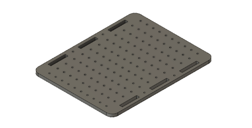
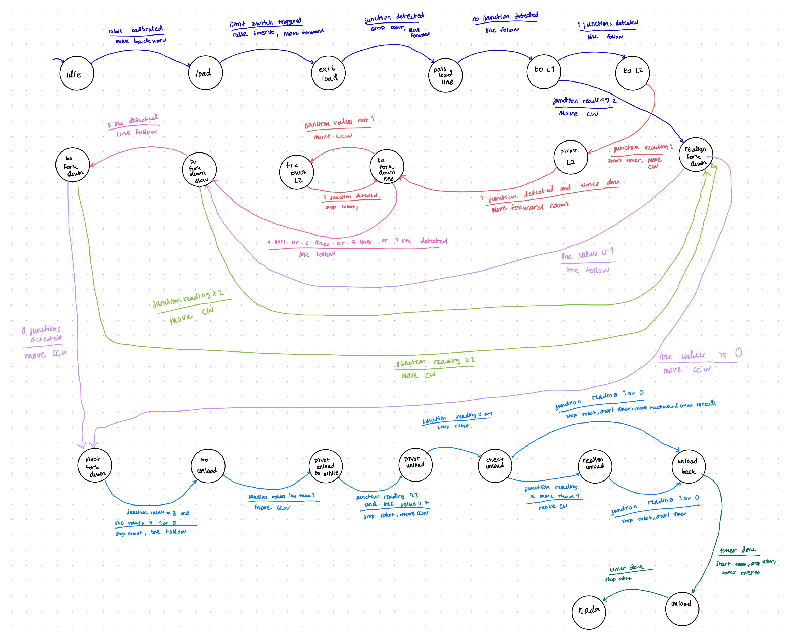

These side pieces were designed to be laser cut and attached to the chassis via two screw/nut
attachments and three press fit slots. It also has 3 holes that line up with a bearing that attaches
to
the Vexmotor and the wheels.
Servo Holder
This 3-D printed piece was designed to be attached to the side piece of the chassis and to hold
the servo motor almost
level to the ground to allow the scooper to attach to it and pick up balls.
Chassis Body
We designed the chassis with a bunch of evenly spaced holes in order to make it easier for
us to prototype. This gave us
the flexibility to move components around and attach them onto the chassis using fasteners.

Back Stop for Tape Sensors
This rectangular laser cut piece was precisely measured in order to have a snug fit
between the two inner sides of the
chassis. We placed it as close as possible to the ground in order to attach the tape
sensors right above the ground and
therefore provide more accurate readings for line following. However, after
unsuccessfully troubleshooting with line
following for a couple days, we decided to make a design change and add the tape sensor
holder in the back of the robot.
This ended up providing better readings for us.
Assembly of Chassis
This an assembled view of what all the laser cut and 3-D printed parts look like
when assembled (not including the
scooper)
Second Layer
We also laser cut a second layer for the chassis in order to maximize the space
for our circuits. We decreased the
amount of holes to reduce the cut time.
2. Attach motors and wheels
After laser cutting and 3-D printing all the parts, the next step was to integrate the wheels and motor.
Since the
dimensions for the holes weren’t perfectly aligned, we used a power drill to line up the holes to fit
with the bearing.
Once it fit, we used the built in fasteners on the VEX motors to attach the motor and insert the shafts
for the wheels.
We also added couplers to prevent the wheels from hitting the side of the chassis and minimize the load
on the wheels.
Improvisation
In order to balance out the two back wheels, we also added a “roller wheel” in the front. We created a
prototype support
out of foam core, where we basically stuck nails through the holes on the chassis and all the way
through the foam core.
This attachment ended up working just fine, so we decided to keep it and focus on the more important
functions of our
robot.
3. Code/Circuitry to move motors and adjust speed
Robot.h is a library designed for this class that streamlines the development and debugging process of
creating a
running robot. Key features in the library include debugging functions that print out sensor readings, a
diagnostic
command, and motor function handlers.
The idea to create the library stems from the hours of the early development process. Trying to debug
and organize code
was very difficult and unintuitive. This library has easily readable functions that do exactly what they
are named. This
way, we abstract the underlying code that allows for certain robot tasks and instead have the end user
focus more on
complementing a state machine for the robot. For example, if one wanted the robot to line follow at a
certain state,
they can simply write robot.Follow() without worrying about edge cases and maintaining the same logic in
a not the part
of the program. By defining a few key pins using the given library structs, anyone trying to recreate
our robot will be
able to utilize the library.
Overall, the creating of the library came with a steep up front cost but it eventually paid off when it
came to creating
the state machine logic. The code we developed became much cleaner and easier to understand and helped a
lot when it
came to debugging. Having a program only deal with states and a library only deal with robot functions
helped
decentralize errors and ultimately made refactoring and fixing code a lot easier.
This was our temporary set up to test the line sensors, but our inconsistent values taught us that we
needed to laser
cut a stable back stop to hot glue them to.
Final Line Sensor Attachment
After still not getting consistent readings from the tape sensors when having them aligned with the
front wheels, we
decided to add the tape sensors in front of the roller wheel instead. We hot glued a piece of duron to
the sides and
aligned 5 different tape sensors (instead of 3), which we found gave us more accurate readings.
5. Scooper
After finally getting our robot to line follow somewhat consistently, we began to prototype with our
scooper. We made a
cardboard prototype in order to get the dimensions and make sure it would pick up the balls.
Scooper CAD
This prototype taught us that we needed to make the scooper sloped in order to pick up the balls, and
also had a solid
attachment to the servo motor. We 3-D printed the base and sides separately and hot glued them to reduce
print time. We
printed it out of PLA in order to reduce the load on the servo.
Final Scooper CAD
Servo Attachment
We designed this piece to be a relatively snug fit into the rotating “blade” of the servo motor & used
hot glue to
ensure it stayed. We also added 4 holes to attach it to the scooper with nuts and bolts.
Adjustments to the Scooper
Just like most things in engineering, the assembly of the scooper didn’t go as planned. Our first 3-D
print was barely
big enough to fit 5 balls, so we improvised and attached the sides of our previous unsuccessful print to
increase the
length by an inch on each side. Also, our limit switch on the side of the scooper wasn’t always getting
read because the
opposite side of the scooper would hit the wall first.
In order to fix this, we wrapped a rubber band around the side opposite of the limit switch to make the
side with the
limit switch always hit the wall first. In addition, this additional tension on the right side of the
scooper helped
brace the scooper for the impact it felt when hitting the wall.
Final Assembly
6. Set up circuitry for servo & integrate code
Team Swervo sought to intelligently integrate the technology that we had spent the past six weeks
learning about. Our
strategy revolved around line-sensing to arrive at the scoring area and deposit the balls. However, we
also employed a
limit switch on the end of the scooper to allow for efficient loading of balls in the loading area. A
servo powered the
scooping motion, and two Vex motors provided power and directional control. The key challenge we faced
as a team was the
integration of these systems into a sequence of states.
In order to properly sense the lines at all times of the day, specific thresholds were not set. Rather,
the Swero robot
calibrates its line sensing thresholds at the beginning of each trial. The sensors are placed over a
black line, then
over no line, and from there the robot makes thresholds of black and white. This way, the robot is
always calibrated to
the time of day or any variances from one trial to another.
With the line sensors set, Swervo moves forward to scoop the balls. The limit switch on the end of the
scooper triggers
the scooping action, after which the line following begins. In one fluid movement, Swervo loads the
balls and begins its
line-following journey to the scoring area. In pursuit of an elegant solution, timers are completely
omitted from the
scooping, line-following, and releasing algorithm. To increase simplicity, Lead IR Receiving Specialist
Ziyad Gawish
created a library with useful commands such as “Robot.moveforward”.
With each segment of the line as a different state, the junctions served as state transition points.
Upon arriving at
the scoring area, Swervo again avoids the use of a timer. However, because of the placement of the
scooper, Swervo must
turn around in order to score. The robot knows that it has completed the full 180-degree turn when the
outermost line
sensor picks up the black line again, at which time Swervo drives straight forward and releases the
balls into the
scoring area.
7. Execute state diagram to complete the task

Final Thoughts
The many late nights and frustrating hours spent designing the robot taught Team Swervo about the
importance of
robustness in the design of both the mechanical and code elements. Furthermore, we learned firsthand how
difficult it
can be to gain consistency from a mechatronic system through the many ups and downs of successful, then
unsuccessful
trials. Overall, it was an incredibly educational experience and we appreciate the entire teaching team
for everything
they have done for a great quarter!